1.应用介绍
优惠券是淘淘谷信息技术有限公司开发的一款商家营销型应用工具。商家可以自行发券、核券、查询和管理功能。商户可自定义优惠券的种类、面额、名称、发券总量、最低消费、有效期、使用限制等等。可以让商户根据优惠券实际使用情况做出推广策略调整。商家还可以将发布的优惠券生成二维码打印出来，张贴在门店、柜台等明显位置，用户使用微信扫码后即可打开优惠券并领取。丰富了商家优惠券的推广方式。
2.进入应用
商户通过终端应用市场或商户云平台应用市场购买“优惠券”应用。本应用免费使用。购买成功后即可从应用市场中对应应用中直接进入，也可从我的应用进入“优惠券”。
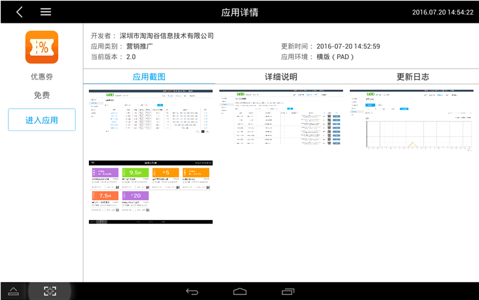图1：应用市场进入我的应用
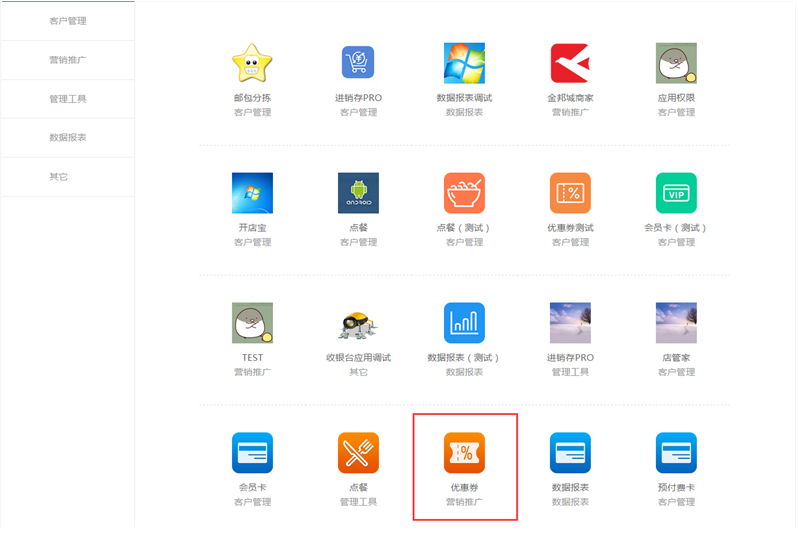图2：从我的应用进入优惠券
3.后台操作说明
3.1 创建优惠券
购买优惠券应用成功后，商户可以登录PC端“商户云服务平台”发布优惠券。
进入云服务平台，打开“我的应用”，点击“优惠券”图标，点击“优惠券”图标后，跳转到优惠券创建页面，按照提示即可创建一张优惠券。
优惠券基础设置如下图3所示：
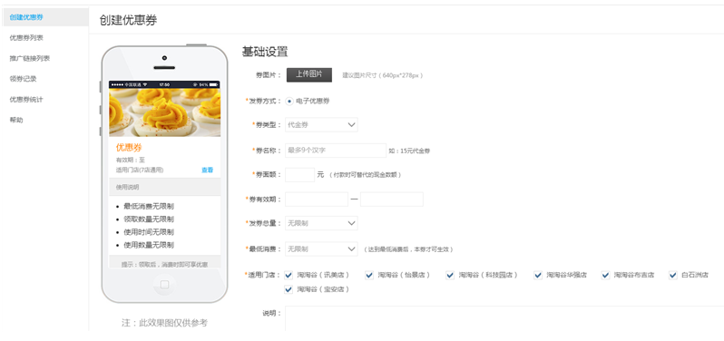图3 优惠券基础设置
● 券图片：
非必填，点击上传图片按钮，可以上传一张图片作为优惠券的封面，参考尺寸为640px*278px。
● 发券方式:
电子优惠券：线上发券，线下领券、核券，无需实体券，全电子核销。
● 券类型：分为代金券、折扣券、买赠券三种，区别如下
● 代金券：使用该券可抵扣相应的金额，如，15元代金券，付款时可替代15元现金
● 折扣券：使用该券，用户可享受相应折扣的优惠，如，8.5折，则付款金额按消费金额的8.5折计算
● 买赠券：使用该券，用户消费后商家赠送相应礼品给顾客
● 券有效期：
该优惠券活动的有效时间，精确到天券有效期。有效期结束时间必须大于开始时间。
● 发券总量：
无限制，则表明该券在有效期内可被无限次使用
限制总量，表明该券在有效期内可被使用的最大次数
● 最低消费：
无限制：使用该券时不对用户消费金额做限制
指定最低消费金额：只有高于最低消费金额时才能使用该券
● 适用门店：
根据当前账户的权限展示管理的门店，适用门店可多选。
● 说明：
在优惠券界面上显示的说明性文字
如果商户想对优惠券进行更精细的限制和设置，可以使用“优惠券高级设置”如下图4所示：
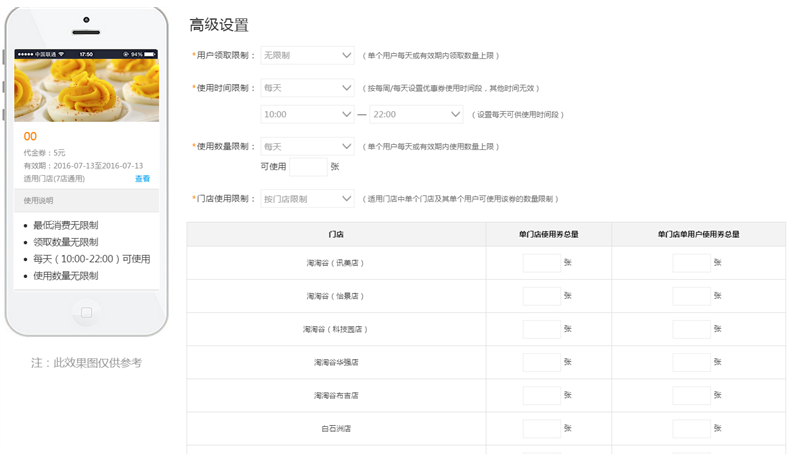图4 优惠券高级设置
● 用户领取限制：
可单个用户每天或有效期内领取数量上限。
● 使用时间限制：
无限制：该优惠券活动在券有效期内任意时间都可使用
每天：限定该优惠券活动每天的使用时间，如10：00-22：00表示该优惠券活动只能在有效期内每天的10：00-22：00之间使用
每周：限定该优惠券活动每周内具体使用天数，如，每周一、三、五，表明该优惠券活动只能在有效期内每周的一、三、五使用
● 使用数量限制：
单个用户每天或有效期内使用数量上限
● 门店使用限制：
适用门店中单个门店及其单个用户可使用该券的数量限制，如图5
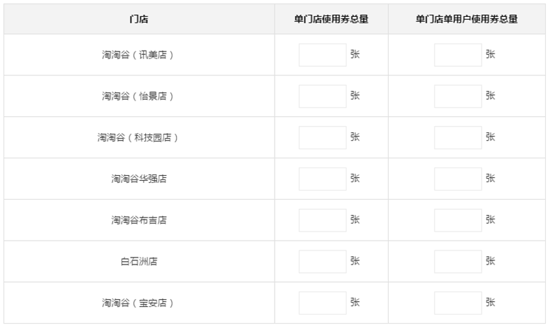图5：门店使用限制
优惠券参数录入完毕后，有两种选择，如下图6、7所示：
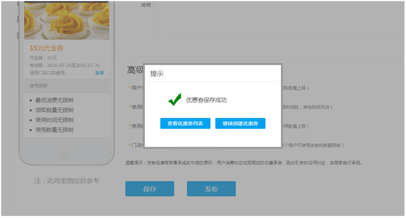图6创建后保存
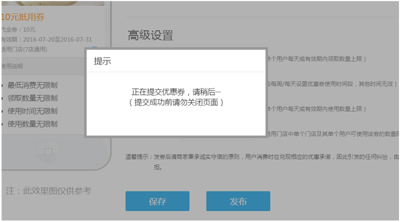图7 创建后发布
点击“保存”：优惠券设置完毕并保存在“优惠券列表”中，此时优惠券状态为未发布，可以在优惠券列表中对该券进行发布，未发布可对券进行修改，并可进行删除。
点击“发布”：该优惠券保存在优惠券列表中并发布。可以在优惠券列表中对该券进行下线、添加推广连接的操作。
权限说明：分配应用权限的用户可进入优惠券应用，并发布优惠券。相同级别（拥有相同管理门店权限）的管理员可对其进行发布、修改、下线、删除等操作。 如系统管理员1有A、B、C三个门店的管理权限，可以设置优惠券同时适用多个门店。同时管理员2也拥有A、B、C三个门店的管理权限，也可对其进行修改。
如门店的管理员可以创建自己店铺内的优惠券。
3.2添加优惠券推广链接
该功能在商户云服务平台设置。优惠券会发布后，会给每个适用门店默认分配一个推广渠道二维码，方便按门店统计。商户将二维码下载后打印并张贴至各门店，用户扫码即可进入优惠券推广页面，并统计出各门店用户扫码次数。系统提供350px×350px，500px×500px，1200px×1200px，2100px×2100px四个尺寸，供商户选择下载。
商户也可根据情况，自己定义推广渠道。具体步骤为，在优惠券列表中，点击推广，创建新的推广渠道。选择适用门店（该优惠券适用的门店），添加渠道名称（推广该二维码的渠道、部门）后，点击“生成二维码”如下图9所示：
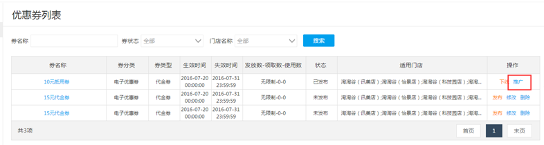图8 添加推广渠道
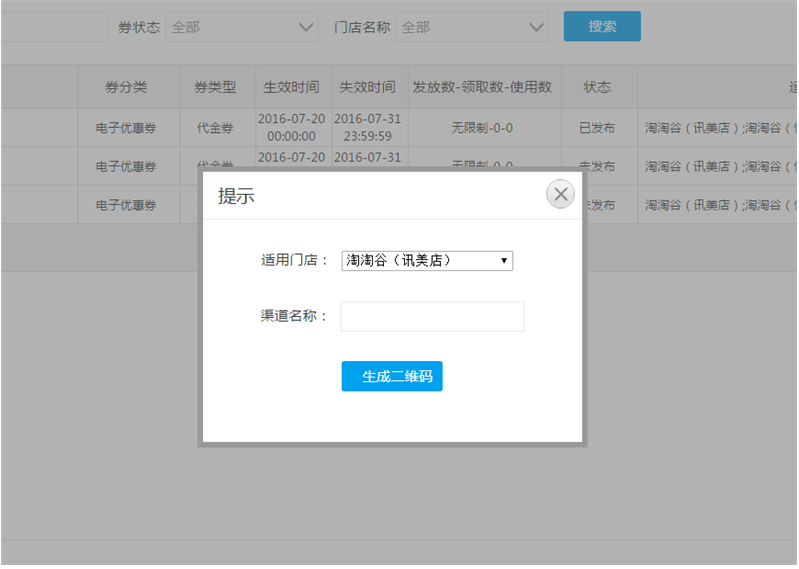图9选择渠道门店与名称
生成的二维码可在“推广连接列表”中查看，如下图10所示：
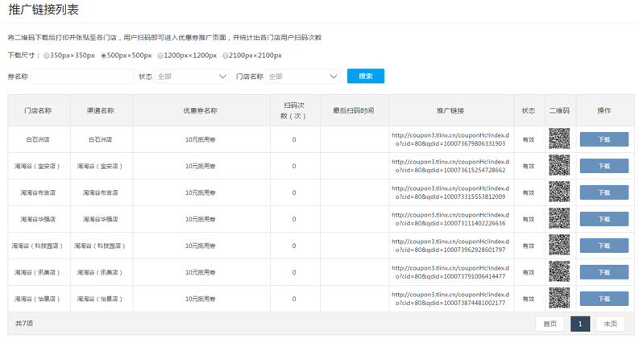图10 推广渠道管理
选择合适的尺寸，点击“下载”，即可得到二维码对应尺寸的大图，打印出来即可对该优惠券进行精准化推广了。
3.3顾客领取优惠券
顾客通过商户门店终端领取优惠券或门店线下扫码领取优惠券。
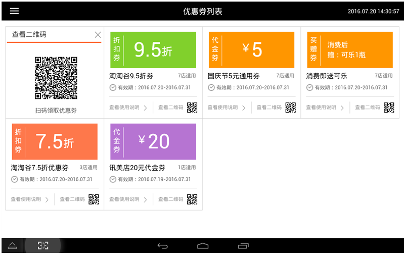图11终端领取优惠券
用户使用手机微信扫码，扫码后打开优惠券页面如下图12所示，点击查看可查看所有分店信息。
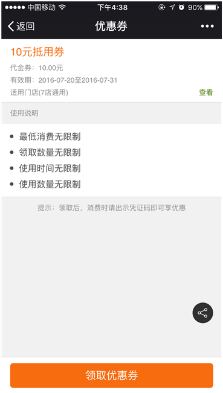图12 用户端领取页面
点击领取优惠券，需要用户输入手机号码并校验手机验证码，下图13、图14所示：
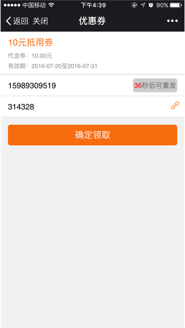图13 手机领取优惠券
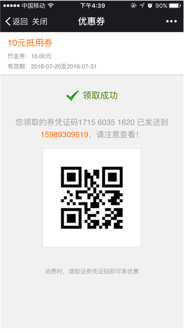图14 手机领取优惠券
输入手机号和验证码，点击“确定领取”，成功后跳转到领取成功页面。领取成功后，系统会给用户手机发送一条短信，用户消费时，使用短信中的凭证码，即可享受相应优惠。
3.4顾客使用优惠券
优惠券的使用是在智能POS终端完成。
用户获取到优惠券的短信凭证码后，消费时，出示优惠券号或领取时的手机号，确认使用，即可享受相应优惠。
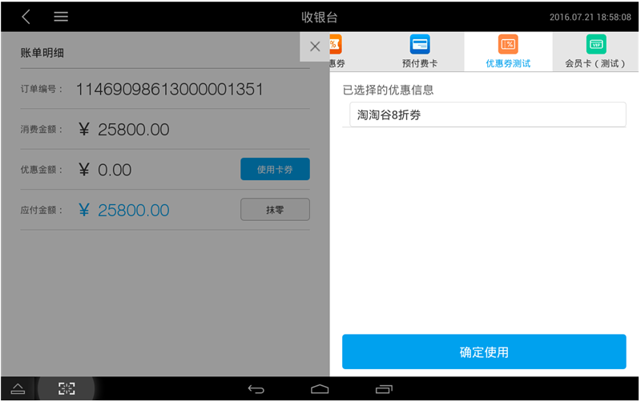图15使用卡券选择优惠券
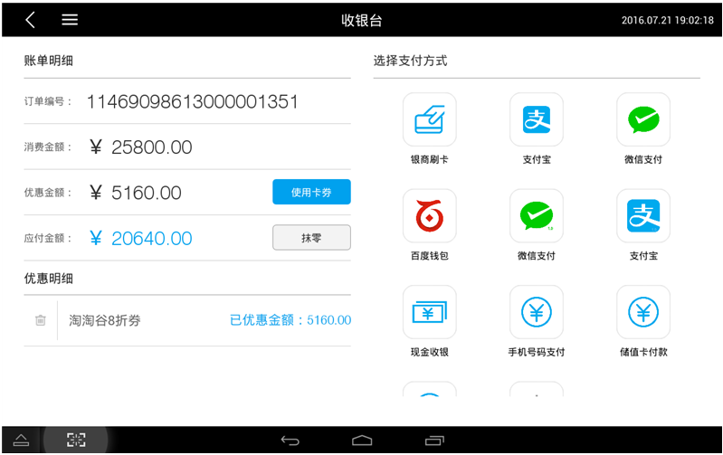图16确认使用优惠券
在使用优惠券后，顾客会收到消费成功的短信。
3.5如何查看优惠券记录
商户可以在PC端商户云服务平台查看优惠券领券记录和统计数据。
商户可以通过领取时间、券名称、优惠券状态以及消费门店查询优惠券的领取消费记录。
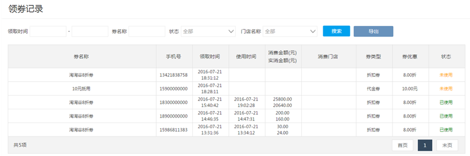
优惠券支持统计图表分析，包括按今天、昨天、最近7天、最近30天和自定义时间统计商户的优惠券的总的领取和使用情况，也可以查看单张券的领取和使用情况（单券统计仅支持统计当前有效券在7天内的领取/使用情况），直观反映优惠券在不同时间段的波动情况，帮助商家更好的开展营销和查看营销效果。
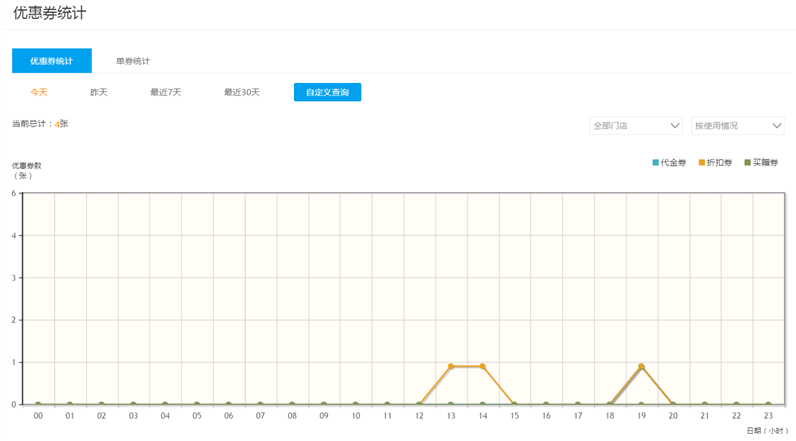
3.6优惠券下线
优惠券超出有效期后会自动下线，商户也可在优惠券列表中提前下线发布中的优惠券，但发券后的承兑引发的任何纠纷，由商家自行承担。